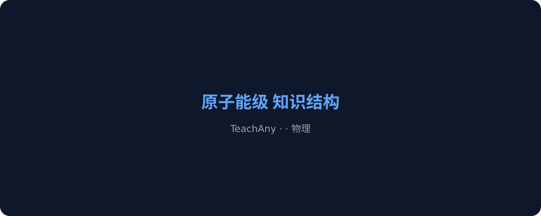
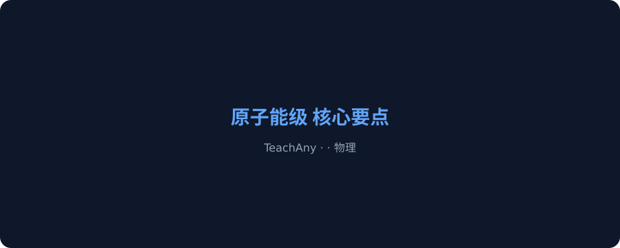
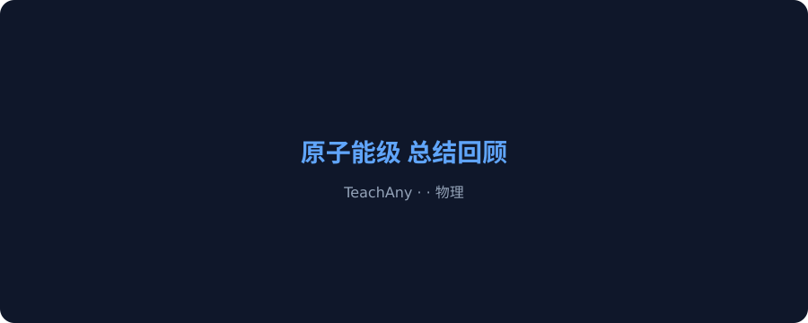

TeachAny 互动课件 · 高中物理
原子能级是高中物理的重点内容。掌握本节知识对于后续学习至关重要。
在日常生活和学习中，我们经常会遇到与原子能级相关的现象——但很多同学对其本质原理理解不够深入。因此，本节课将带你系统学习原子能级，从概念到应用，建立完整认知。
关于原子能级的前置知识，以下说法正确的是？
原子能级属于物理的哪个领域？
学习原子能级最重要的方法是？
原子能级是高中物理的重要知识点。本模块将带你了解其基本概念和核心原理。
原子能级的基本概念是学习本课的基础。理解核心定义和基本原理，才能在后续学习中游刃有余。

关于原子能级的基本概念，以下理解正确的是？
接下来我们深入学习原子能级的核心内容，掌握关键知识点和重要公式或结论。
掌握原子能级的核心原理，能帮助你举一反三，解决各类相关问题。

原子能级的核心原理应用在哪些方面？
现在让我们通过具体的例题和实例，来巩固原子能级的知识要点。
最后总结原子能级的学习要点，建立完整的知识框架，为后续学习打下基础。

总结原子能级的学习，最关键的是？
运用原子能级的知识，分析以下问题：
如何将原子能级的核心原理应用于实际问题？
掌握原子能级的三个关键：概念清晰、原理通透、应用灵活
混淆原子能级中相近概念的区别——注意从本质特征区分
忽略原子能级的适用条件——每个原理都有其前提
机械套用公式而不理解原理——理解>记忆
原子能级最核心的特征是什么？
整理原子能级的核心概念和关键术语，制作思维导图。
运用原子能级的原理，分析一个具体案例或实际问题。
将原子能级与前后知识点联系起来，写一篇综合分析报告。
原子能级的核心概念是什么？
原子能级的学习方法中最重要的是？
原子能级在知识体系中的地位是？
运用原子能级解决问题时，第一步应该？
学完原子能级后，你应该能够？
本课系统学习了原子能级的基本概念、核心原理和应用方法。掌握本节内容，为后续深入学习打下坚实基础。